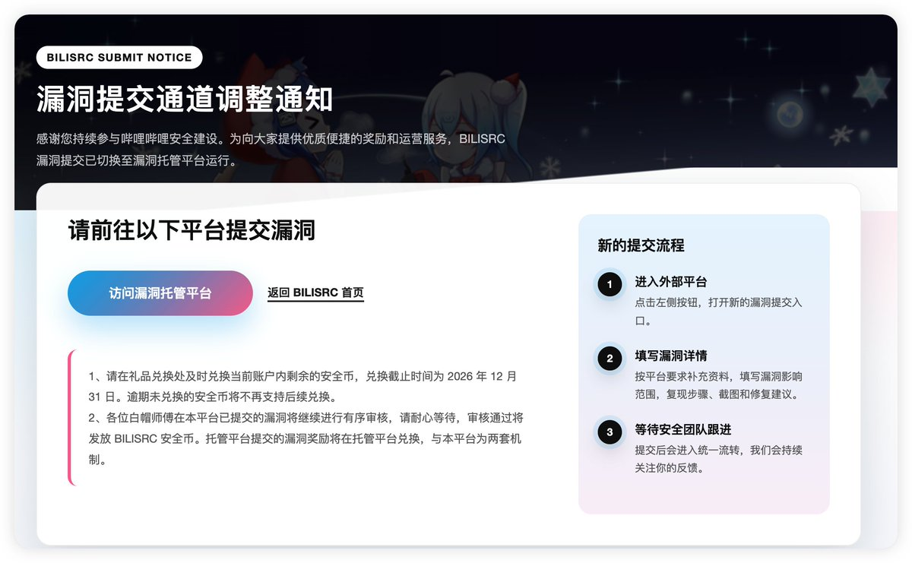
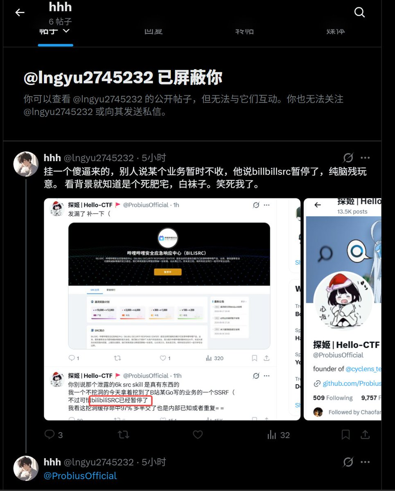

洛铃🦊Magic Caster
@LolingVerse
@SnowyWar36965 没看懂 @grok


Sn1waR
@SnowyWar36965
给你闹麻了，这年头ai入脑的傻逼都能上x上发帖了，主动咬人然后自己没理，只能像条蛆一样灰溜溜挂人还给别人拉黑了，傻逼一个，你连暂停和托管都不知道你这不傻逼吗？一击脱离显得你很有能力吗笑嘻了，你爹打ctf挖漏洞的时候你在你妈子宫里还是精子呢，傻逼。 https://t.co/Frl444DTTx https://t.co/hc57jt5gVk